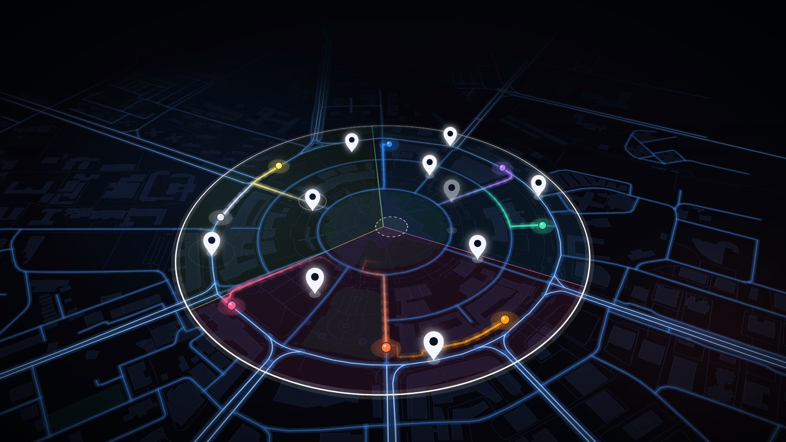
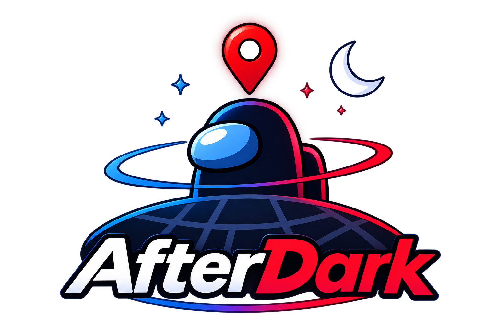
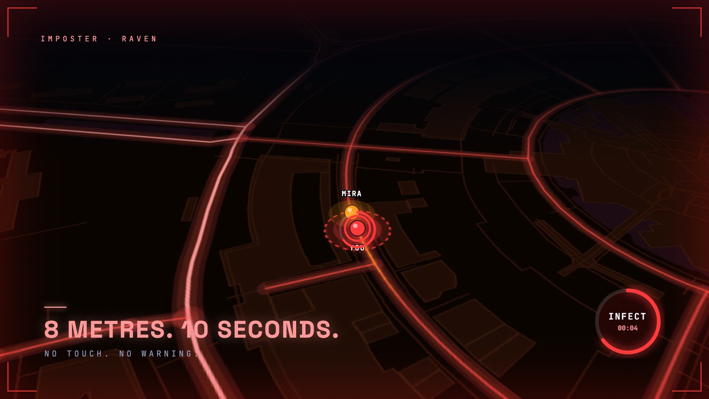
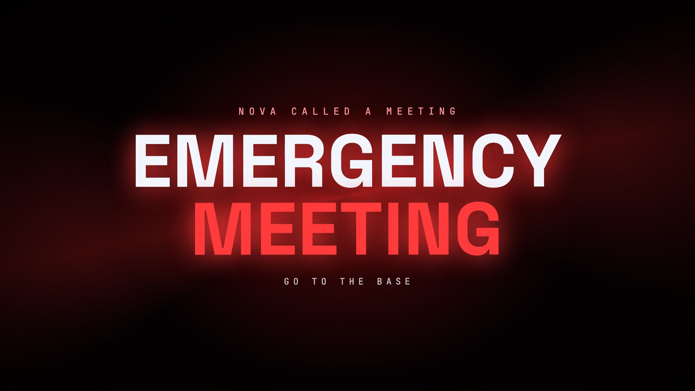
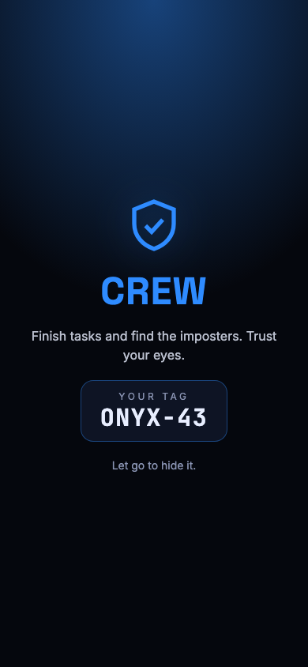
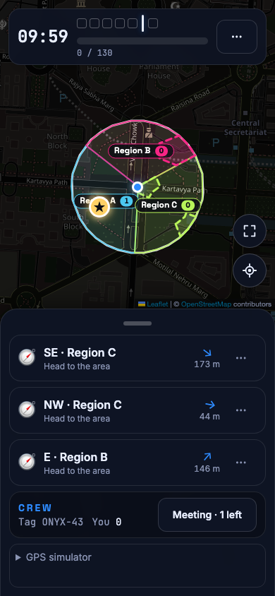
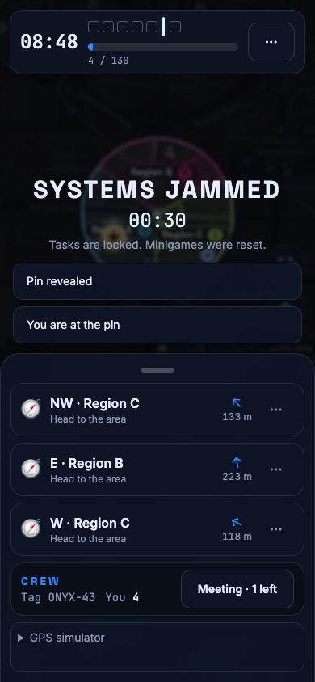
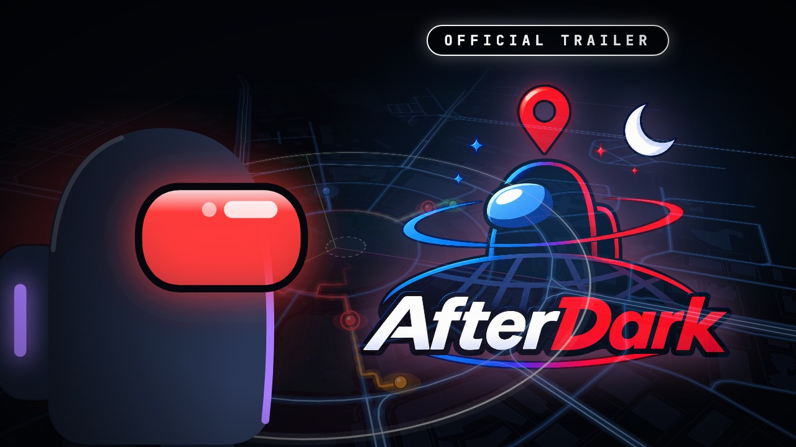

Code N Mode · hackathon build
We built Among Us
for the real world.
Your city is the map. Your friends are the crew.
Some of them are lying.


Your city is the map. Your friends are the crew.
Some of them are lying.
Clues like “NE · Region B” lead to hidden spots on a real map. Get there, solve a 20-second minigame.

Stay within 8 m of someone for 10 seconds and they’re infected. Nobody is told who.

Anyone can call a meeting. Everyone walks to the Base, argues in person and votes.
Share a 6-letter code and play in your phone’s browser.



Unit, integration and end-to-end, green on every commit.
Each phone only receives what its player may know, checked down to raw network frames.
Every rule, timer and dice roll runs on the server. The phone just draws.
20 games of 8 on one server, positions on screen in under 0.2 s.
Anti-spoofing speed checks, reconnects that keep your role, no-go zones, and “Stop somewhere safe” before every puzzle.

Free · in your browser · grab a few friends and an open, safe space